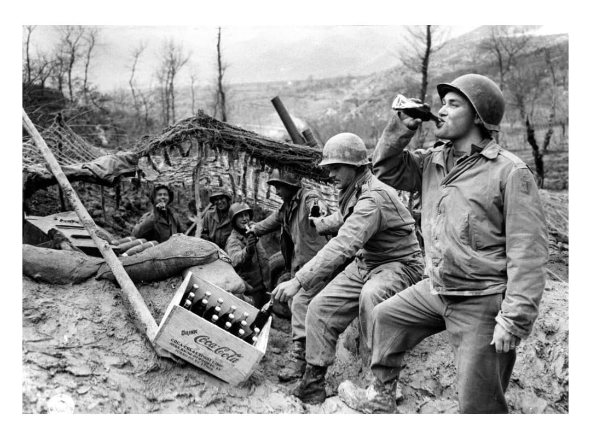
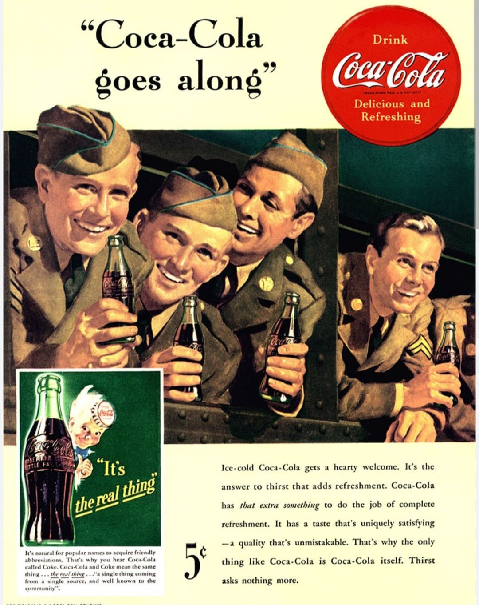
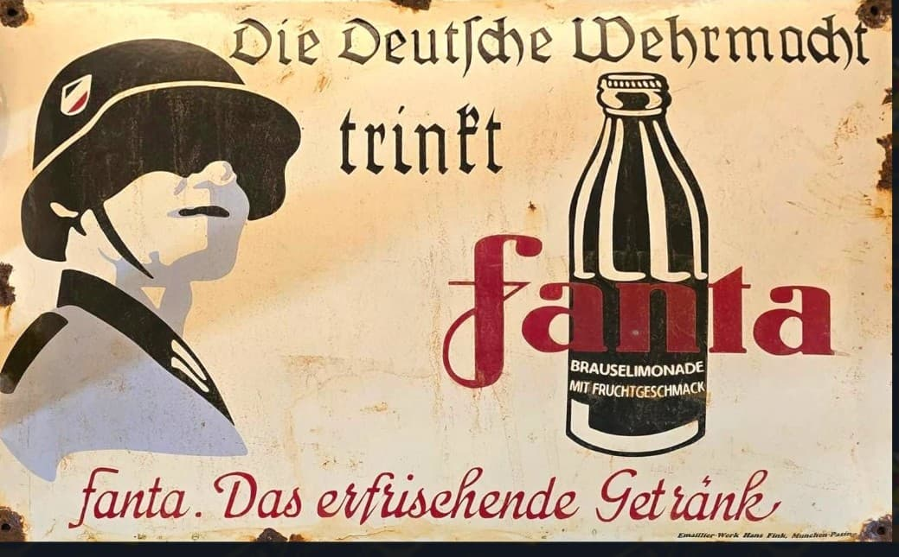
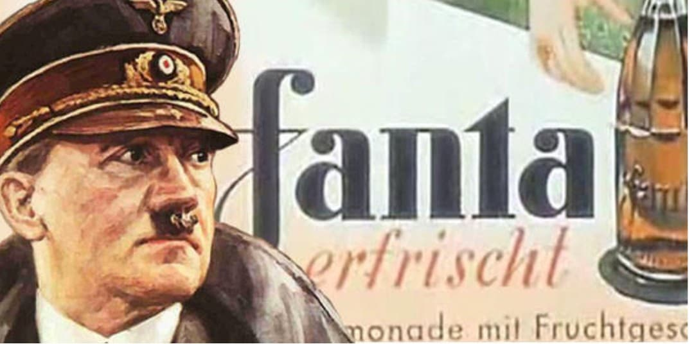
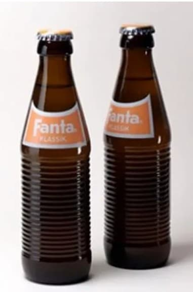

Durant la Seconde Guerre mondiale, deux boissons aujourd’hui mondialement connues suivent des trajectoires radicalement opposées. Coca‑Cola, produit américain emblématique, devient un symbole associé aux forces alliées, présent sur les fronts, dans les camps, et jusque dans les zones libérées. À l’inverse, Fanta apparaît en Allemagne en pleine période d’embargo, conçu comme une boisson de substitution destinée à maintenir l’activité industrielle malgré la rupture totale des importations américaines.
Ces deux produits, réunis après la guerre dans le même groupe, illustrent la manière dont un conflit mondial peut façonner l’industrie alimentaire, la culture populaire et la communication politique. Leur histoire croisée constitue un exemple unique de diffusion culturelle, d’ingéniosité industrielle et de propagande visuelle.

Lorsque les États-Unis entrent en guerre en 1941, Coca‑Cola devient un élément de moral pour les troupes. L’entreprise obtient l’autorisation d’installer des unités d’embouteillage directement dans les zones d’opérations. Ces installations permettent de produire des millions de bouteilles destinées aux soldats américains, garantissant une présence constante de la boisson sur les fronts européens, africains et pacifiques.
Pour les civils européens, Coca‑Cola incarne la modernité américaine. Sa distribution dans les villes libérées contribue à associer la boisson à l’arrivée des GI, au confort matériel et à la culture populaire américaine. Dans de nombreuses régions, Coca‑Cola devient l’un des premiers produits américains accessibles après des années de rationnement et de propagande ennemie.

En Allemagne, la situation est totalement différente. À partir de 1940, l’embargo coupe le pays des importations américaines, notamment du sirop Coca‑Cola indispensable à la production locale. Pour éviter la fermeture de l’usine, Max Keith, directeur de Coca‑Cola Allemagne, développe une boisson entièrement nouvelle à partir de résidus alimentaires disponibles dans le Reich : fibres de pommes, betterave, petit lait et sous‑produits de pressage.
Fanta naît ainsi comme une boisson de substitution, conçue pour maintenir l’activité industrielle malgré les restrictions. Son goût est très éloigné de la version moderne. La création de Fanta illustre les stratégies d’adaptation industrielle en période de pénurie, où chaque ressource disponible est exploitée pour compenser l’absence de matières premières essentielles.

La boisson est rapidement intégrée à certaines campagnes de communication du régime nazi. L’iconographie met en avant une production nationale autosuffisante, valorisant l’ingéniosité industrielle allemande malgré les restrictions imposées par la guerre. Fanta devient un exemple de produit façonné par le contexte politique, économique et idéologique du Reich.
Dans les affiches, la boisson est parfois associée à l’idée de résilience nationale. Le message sous‑entendu est clair : même coupée du monde, l’Allemagne peut produire ses propres biens de consommation. Cette communication participe à la construction d’un imaginaire d’autonomie industrielle, essentiel pour maintenir le moral de la population.

Après la capitulation de l’Allemagne en 1945, Coca‑Cola récupère la marque Fanta. La boisson est reformulée, modernisée et intégrée au catalogue du groupe. Au fil des décennies, Fanta devient une boisson internationale, très différente de sa version d’origine. Sa couleur, son goût et son image sont entièrement repensés pour correspondre aux standards du marché mondial.
Coca‑Cola et Fanta, nés de contextes opposés — l’un lié aux forces alliées, l’autre à l’économie allemande sous embargo — se retrouvent réunis dans le même groupe après la guerre. Leur histoire illustre l’impact du conflit sur l’industrie alimentaire, la culture populaire et la communication visuelle. Ces deux produits deviennent des symboles de la mondialisation d’après-guerre.